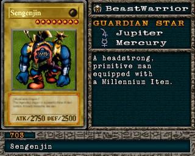

#703 · Monstro
Sengenjin
ATK2750
DEF2500
Nível8
TipoBesta-Guerreira
AtributoEarth
Guardian StarsJúpiter / Mercúrio
Monstro de ritual: use #678 Revival of Sennen Genjin com Hitotsu-me Giant, Tiger Axe, Millennium Golem.
Quem dropa no Mod 13
| Duelista | Rank | Chance | Média | |
|---|---|---|---|---|
| S/A-POW | 0,88% 18/2048 | 1 em 114 duelos |
Quem dropa no jogo original
Não dropa de nenhum duelista no jogo original.
A chance vale por duelo vencido com o rank indicado. "1 em N" é a média de duelos para conseguir a carta. S/A-POW = vitória por força; S/A-TEC = vitória técnica; B/C/D = ranks baixos.